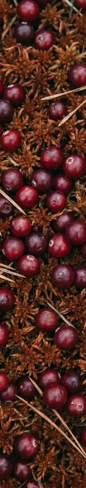

Зин № 1 · Приложение · Первоисточник
Клик по реплике перематывает видео ↓
Транскрипция: faster-whisper large-v3 · диаризация: pyannote community-1 · тексты вычитаны вручную, неразборчивые места помечены [неразборчиво].